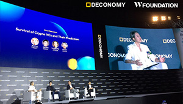
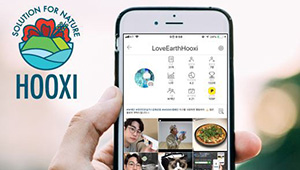

Media
Taking Climate Action Via a Gaming App
READ MORE
W-Foundation Announces W Green Pay Token Supply Reduction
READ MORE
W-Foundation’s GHG campaign mobile app HOOXI ranks 4th on Google Play & App Store
READ MORE

W-Foundation Participates At Deconomy As Official Partner
READ MORE
W-Foundation Cooperates with United Nations Framework Convention on Climate Change (UNFCCC) on Sustainable Development Goals
READ MORE

HOOXI App & HOOXI Mall Officially Launched!
READ MORE
Gangwon Provincial Government to Host ‘Korea Carbon Forum 2018’ with W-Foundation
READ MORE
W-Foundation and Actwo Technologies partner to inject real economy into blockchain, bringing it to the mainstream
READ MORE
ICON (ICX) Partners W Foundation On Global Green Gas Reduction Compensation
READ MORE
W Green Pay ICO (WGP Token): HOOXI Blockchain Social Carbon Credits?
READ MORE
W Green Pay and KONA I: Korea’s First Crypto Debit Card
READ MORE